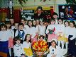
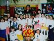

Galeria fotografii. Kliknij zdjęcie aby je powiększyć.
Ja z jedną z wielu moich grup Ja i moi wychowankowie podczas uroczystości Dnia Babci
Moja rodzina i ja
Moja pasja - ogród

Ja z jedną z wielu moich grup Ja i moi wychowankowie podczas uroczystości Dnia Babci
Moja rodzina i ja
Moja pasja - ogród